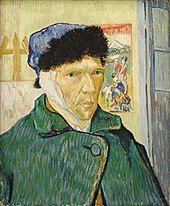

Cinema et television
- 1956 : La Vie passionnée de Vincent van Gogh de Vincente Minnelli, avec Kirk Douglas
- 1990 : Vincent et Théo de Robert Altman, avec Tim Roth
- 1990 : Rêves d'Akira Kurosawa, série de huit courts-métrages dont Les Corbeaux avec Martin Scorsese
- 1990 : Vincent et moi de Michael Rubbo, avec Tchéky Karyo
- 1991 : Van Gogh de Maurice Pialat, avec Jacques Dutronc
- 2009 : Moi, Van Gogh de François Bertrand, documentaire avec la voix de Jacques Gamblin
- La Maison Jaune, projet de film court animé au sujet de Van Gogh (anglais/espagnol)
- 2010 : Van Gogh: Painted with words (TV) d'Andrew Hutton, avec Benedict Cumberbatch
- 2010 : Doctor Who, Vincent et le Docteur, 5x10 (série TV), interprété par Tony Curran
- 2013 : Sunflower Seed de Pascal Adant, Vincent van Gogh au Borinage, avec Gaëtan Wenders
- 2015 : Le Choix de peindre, docufiction d'Henri de Gerlache, dans le cadre de Mons 2015. Vincent van Gogh y est interprété par Tom Barman105
- 2017 : La Passion Van Gogh, film d'animation de Dorota Kobiela et Hugh Welchman
- 2018 : At Eternity's Gate de Julian Schnabel
- 2021 : L'Art du crime - S4E1 Le testament de Van Gogh, interprété par Vincent Londez (diffusé le 7 mai 2021 sur France 2)
- 2021 : Copyright Van Gogh (China's Van Goghs), documentaire de Yu Haibo et Yu Tianqi Kiki (Chine, 2016)
- 2022 : Van Gogh In Love de Jean-Luc Ayach, avec Frédéric Diefenthal et Steve Driesen dans le rôle de Van Gogh
La vie, l'œuvre et la personnalité de Vincent van Gogh ont inspiré de nombreux films :
